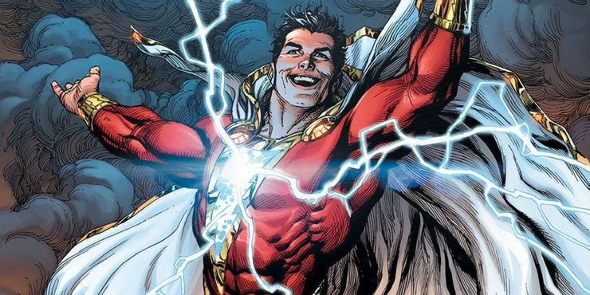
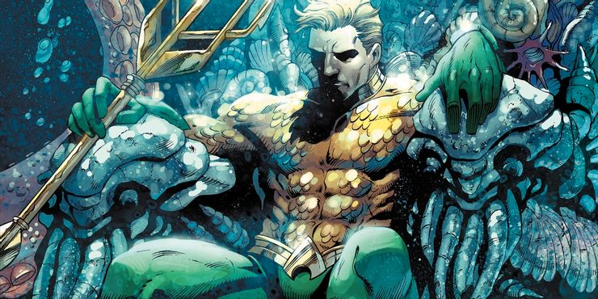
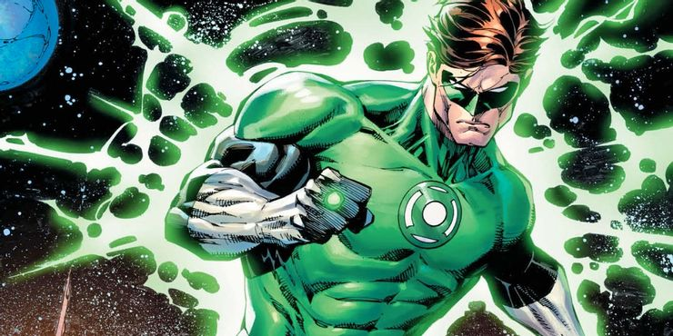

Shazam
Es el alter ego de Billy Batson, un niño que, al pronunciar la palabra mágica "SHAZAM" (Acrónimo de seis "ancianos inmortales": Salomón, Hércules, Atlas, Zeus, Aquiles y Mercurio), puede transformarse en un adulto disfrazado con los poderes de fuerza sobrehumana, velocidad, vuelo y otras habilidades.
Pulsa en la imagen o aquí para ver más.Aquaman
Su historia narrada por si mismo:
- "La historia debe comenzar con mi padre, un famoso explorador submarino — si yo dijese su nombre, lo reconocerías. Mi madre murió cuando yo era un bebé, y él volvió a su trabajo para resolver los secretos del océano. Su gran descubrimiento fue una ciudad antigua, en las profundidades donde ningún otro buzo jamás había penetrado. Mi padre creía que era el reino perdido de la Atlántida. Él construyó una casa hermética en uno de los palacios y vivió ahí, estudiando los archivos y dispositivos de la maravillosa sabiduría de la raza. A partir de los libros y archivos, él aprendió formas para enseñarme a vivir bajo el mar, aprovechando el oxígeno del agua y utilizando todo el poder del mar para hacerme maravillosamente fuerte y rápido. Entrenando y descubriendo centenares de secretos científicos, me convertí en lo que tú ves — un ser humano que vive y prospera bajo el agua."
Pulsa en la imagen o aquí para ver más.Green Lantern (Hal Jordan)
La iteración de Hal Jordan es posiblemente la versión más utilizada por DC Comics. Es una de las tres encarnaciones más icónicas de Linterna Verde, junto con Alan Scott y John Stewart. Una de las ventajas narrativas del personaje de Linterna Verde es lo variadas que pueden ser las distintas versiones, ya que la Green Lantern Corp. es una fuerza de paz intergaláctica llena de ellas.
Pulsa en la imagen o aquí para ver más.